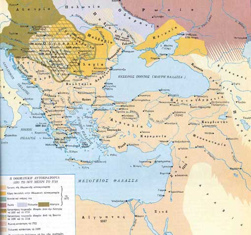

|  |
| Το 1672, με την ενσωμάτωση της Ποδολίας, η Οθωμανική αυτοκρατορία έφτασε στη μεγαλύτερή της έκταση. Εκτεινόταν από τον Περσικό κόλπο μέχρι την Αδριατική και από τη βόρεια Αφρική μέχρι τη Βουδαπέστη. Η αποτυχία όμως κατάληψης της Βιέννης (1683) σήμανε το τέλος της εδαφικής επέκτασης της αυτοκρατορίας και οι πόλεμοι που ακολούθησαν οδήγησαν στην παρακμή της και στη σταδιακή απώλεια των κτήσεών της. |